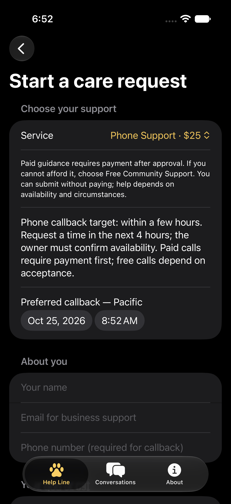

CUSTOMER APP · PRIVATE PREVIEW
Care guidance.
Your conversation.
Message an experienced veterinary assistant about your dog or cat, or request a phone callback within a few hours.
Paid guidance requires payment. Submit the details, wait for availability approval, then complete payment for paid support. Free Community Support has no payment step and opens if accepted, depending on availability and circumstances. For phone support, review the confirmed callback time before paying.
Request support on the websiteThe native iPhone app is in private preview and has not been uploaded to the App Store. There is no public app download yet.

Choose how we talk
- Focused Guidance — $10: a private conversation about one pet-care topic.
- In-Depth Support — $15: more detailed private guidance.
- Phone Support — $25: a callback targeting the next few hours, subject to confirmed availability.
- Free Community Support: submit without payment for messaging or a callback. Help depends on availability and circumstances; the owner must accept before the conversation begins.
Written support usually receives a reply within 24–48 hours. Phone callbacks have a separate target of a few hours. The service is not continuously monitored.
Finish when you are ready
Either you or the owner can end the conversation. This stops messages on both sides and keeps your history and payment record. Start a new request for more guidance. Ending messages does not cancel a callback or automatically refund payment.
Continue in the app or on the website
Your private receipt opens the same conversation used by the business owner. In the installed app preview, add your private conversation link in Conversations or choose “Open in installed customer app” on your current private page. Keep the link safe: anyone with it can read and reply.
No customer account is required. Conversations saved in the app stay on that device; use the private link to reopen them elsewhere. Older website conversations remain available at their original links. Return to check replies; push, email and SMS notifications are not enabled.